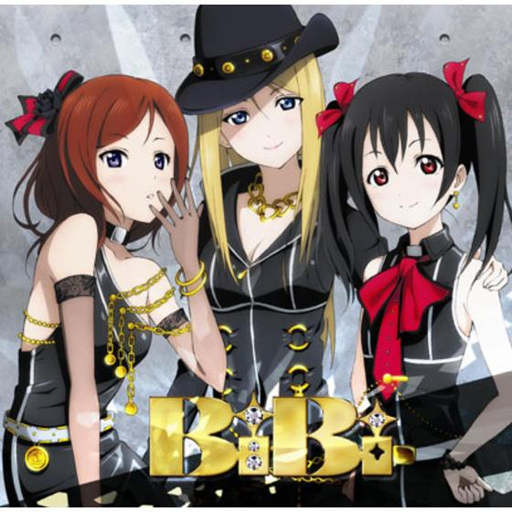

This is a list of some popular Maki and BiBi songs

This is a list of some popular Maki and BiBi songs
| "Aishiteru Banzai" The song is written by Hata Aki, composed by Yamada Takahiro, and arranged by Shimizu Teppei. |
||
| "Cutie Panther" The song is written by Aki Hata, composed and arranged by Hiroshi Sasaki. |
||
| "Daring" The song is written by Aki Hata, composed and arranged by Keiichi Kondou. |
||
| "Daring" The song is written by Aki Hata, composed and arranged by Mitsuru Wakabayashi. |
||
| "Start:DASH" The song is written by Hata Aki, composed and arranged by Sasaki Hiroshi. |
| "Cutie Panther" The song is written by Aki Hata, composed and arranged by Hiroshi Sasaki. |
||
| "Fuyu ga Kureta Yokan" The song is written by Aki Hata, composed and arranged by Takashi Saeki. |
||
|  | "Love Novels" The song is written by Aki Hata, composed and arranged by Yuugo Sasakura. |
|
| "Zurui Yo Magnetic Today" The song is written by Aki Hata, composed and arranged by Kensuke Okamoto. |